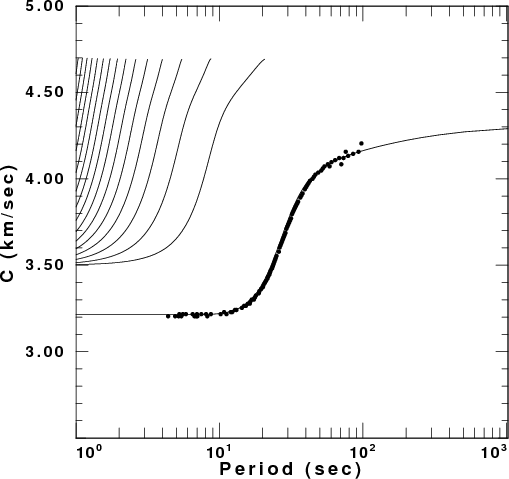

This lesson creates some synthetic seismograms by surface wave model
superposition. The user is requested to determine the phase velocities
through the use of the interactive program do_pom. The observed
dispersion is then compared to the theoretical values from the model.
I
create the directory LessonB
andplace the scripts DOIT,
and DOCLEAN in
that directory.
For testing everything is in the tarball LessonB.tgz
. Unpack this with the command gunzip -c LessonB.tgz | tar xvf
- This will create the directory
LessonB and place the file 00README and the scripts DOIT and
DOCLEAN
in that directory.
DOIT
When you run this script, surface-modal superposition is used to create
a synthetic seismograms at a distances of 2500-2850 km in 50 km
increments for a source with a
depth of 10 km and with a faulting model of strike=45, rake=45 and
dip=45. For this source depth mechanism, the Rayleigh wave signal
is simple in that the fundamental model spectrum is smooth.
Phase Velocity Analysis
After the synthetics are computed
the program do_pom is started
using the command
> do_pom B*Z00.sac
to study the Rayleigh wave dispersion. You will see the following
graphical menu:
Now clock "SelectALL" and then click "Do POM".
The next
page sets the processing parameters. Click on the "Nray" button to
select 250 phase velocities between the Vmin and Vmax values, click on
the "Shade" to have a color contour display and click on the "Type" to
select Rayleigh since you are using vertical component traces. I set
"Length" to 2 to get more frequency domain resolution for the plots.
When
you are done, click on the "Do POM" button to go to the next page.
At this point the FORTRAN program sacpom96 is executed to create the
dispersion information which is the next page displayed.
When sacpom96 is done, you
will be presented with a graphical menu. Phase velocity analysis
consists of time shifting signals and stacking the spectra. The maximum
of the amplitude spectrum will give dispersion values reflecting the
true values as well as the artifact of spatial and temporal aliasing.
You use this screen to select the dispersion curve.
Clicking on the "Auto" button will ask you to define the mode, here
Fundamental. Auto means that clicking on the dispersion window will
initiate a "rubber band" for selecting the dispersion. A second mouse
click will select the dispersion values nearest the rubber band
line. When you are done, click on "Exit" and then select "Yes" to
save the dispersion values.
If we start using the B*T00.sac traces, we will get Love wave
dispersion. The graphical results and selected dispersion are shown in
the next figure.
Comparison with Theory
The shell script now compares the selected dispersion to the
theoretical dispersion for the model. This is a very useful exercise
since we can learn something about the imperfections of the multiple
filter analysis used to get the group velocities:
Comparison
of theoretical and observed phase velocities
Love Wave
Comparison
Rayleigh
Wave Comparison

We see that the phase velocities are well determined at all
periods.
Cleanup
After you are done testing these programs, enter DOCLEAN to clean up the directory.
You will be left only with the 00README,
DOIT and DOCLEAN files.
Other Tests
Modify the script so that the source depth is 30 km, the faulting
mechanism has strike 0, dip 90 and rake 0. Then run the script.
In this case you will notice that the Rayleigh wave signal on the
vertical and radial components has a spectral hole. See if this affects
the phase velocity determination.